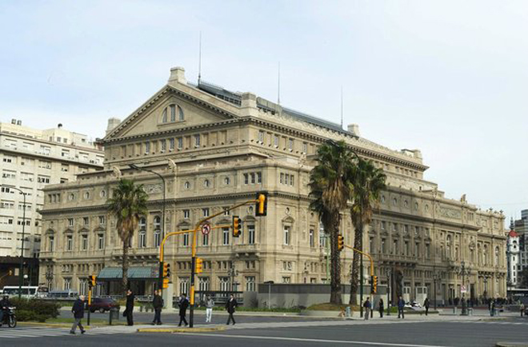
Considered one of the ten best opera houses in the world, the present Teatro Colón replaced the original theatre which opened in 1857. Towards the end of that century it became clear that another theatre was needed and, after a 20-year process, the new theatre opened on 25 May 1908, with Giuseppe Verdi's Aïda. The Teatro Colón was visited by the foremost singers (including Maria Callas, Feodor Chaliapin, Plácido Domingo, José Carreras, Luciano Pavarotti, Victoria de los Angeles, Montserrat Caballé and Kiri Te Kanawa) and opera companies of the time, who would sometimes continue on to other cities including Montevideo, Rio de Janeiro and São Paulo.
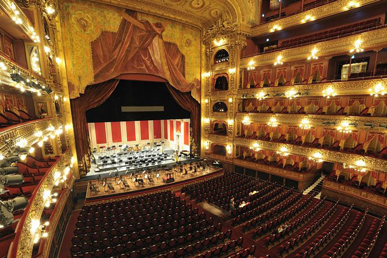
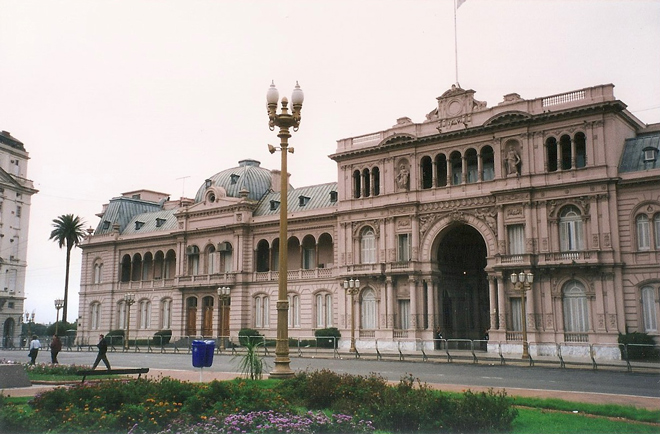
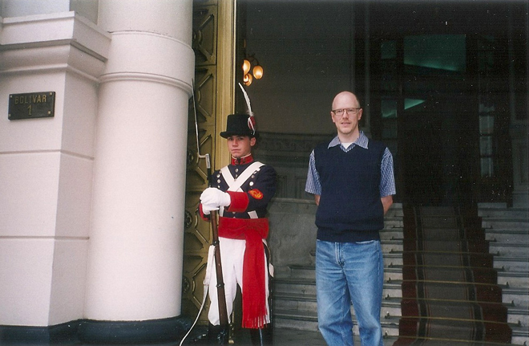
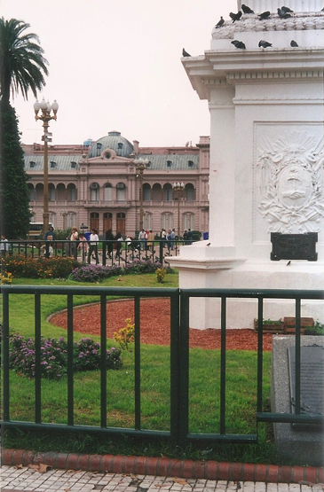
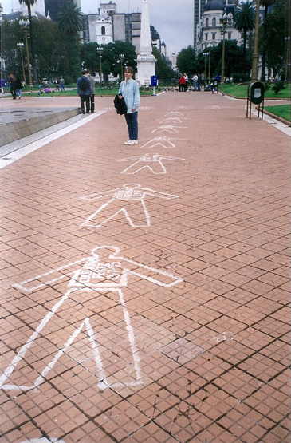
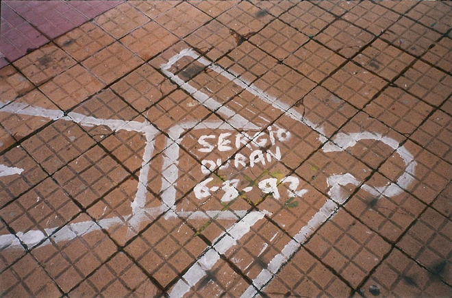
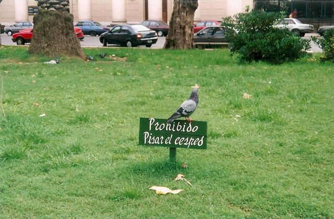
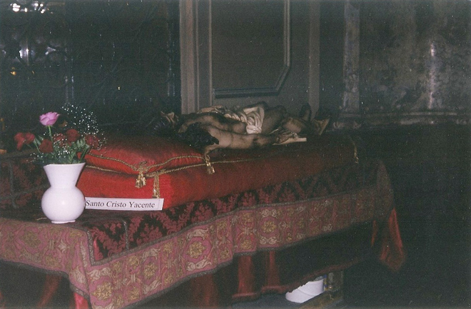
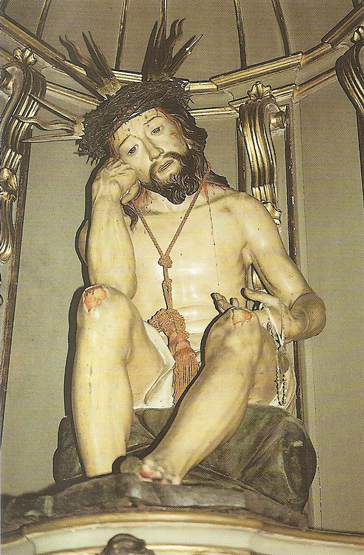
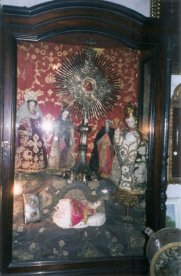
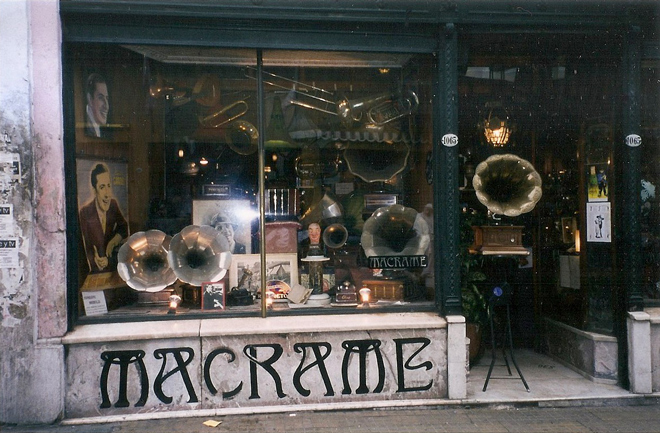
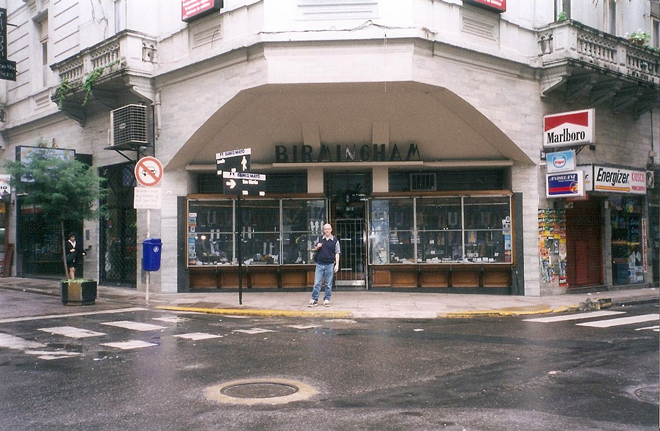
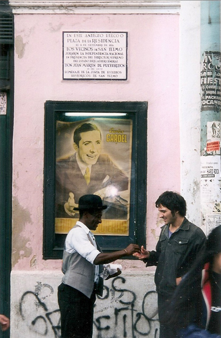
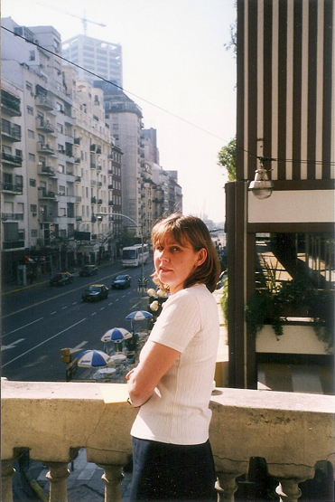
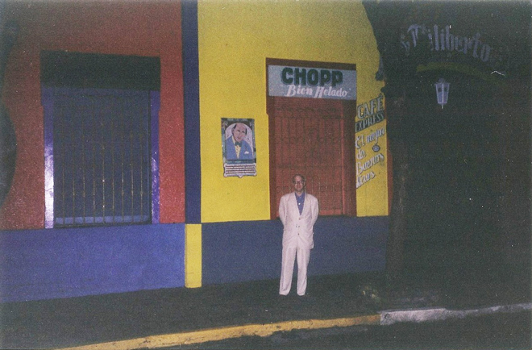
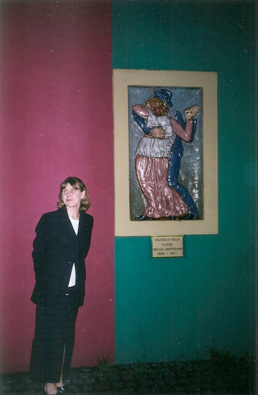
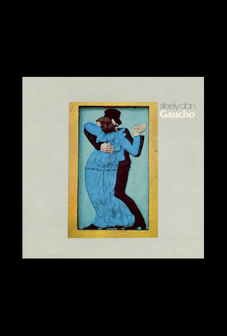